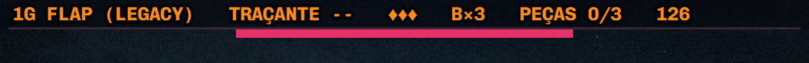
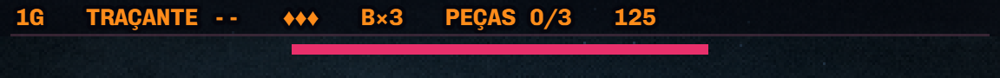
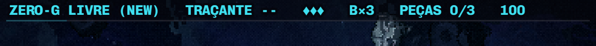
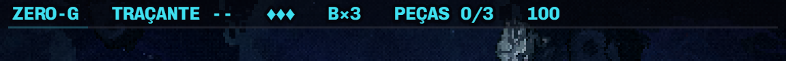
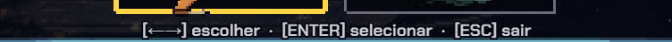

Bloco I · os itens 10 e 16 (HUD e dicas)
17/10/2026 · Aprovados por você (10 e 16), e o 15 foi tentado à noite e DESFEITO a pedido seu (a fila unida é de propósito). Estão no código, NÃO commitados: se algum não agradar, volta numa linha. Os itens 9, 11, 13 e 14 (fumaça, tela final, flashes, explosão da cutscene) pedem arte ou decisão sua, e o 12 (subtítulo do menu) vai junto do bloco E. O 15 (drones encavalados) está no fim da folha.
Item 10 · os rótulos de desenvolvimento no HUD
- Saiu o nome da condução ("FLAP (LEGACY)", "LIVRE (NEW)"), que era nome interno de desenvolvimento. A zona continua (1G / ZERO-G), e a cor da linha já dizia a condução: âmbar para o flap, ciano para o livre. O resto da linha não mudou: arma, vidas, bombas, peças e pontos.
- A barra de vida dos chefões ganhou folga: ela ia de y=14 a 18, a 1px da linha de progresso da HUD (y=13), e lia colada nela. Agora vai de 17 a 21, com 3px de folga. Eram cinco cópias do mesmo número (os quatro chefões e o golfinho); viraram uma constante só,
BARRA_CHEFAO_Y, noconfig.ts.




Item 16 · as setas das dicas de controle
- A mesa de cartas usava
[<- ->]e o painel de nave usava[←→]. Medi no navegador: a Chakra Petch (a voz das duas dicas) não tem as setas ← →. No painel elas saíam na fonte serifada de reserva do navegador, que é a diferença que se via. - As duas agora usam
[< >], que a fonte tem. Testei também‹ ›, que ela tem, mas saem miúdas demais.

[<- ->], na mesma fonte).Item 15 · os drones encavalados (17/10, à noite) · DESFEITO
desfeitoEle mandou voltar como era: "foi decisão manter os inimigos mais unidos, principalmente pela card de reação em cadeia, além de ser mais prazeroso entrar em cadeia, visualmente falando". A fila apertada é de propósito. O código voltou ao sorteio de ±12 por nave, sem alternar altura, e o item 15 sai da lista. O registro abaixo fica só como histórico.
- A conta: o drone tem 27px de largura e anda a 70px/s. Com 0,2–0,3s entre um e outro, a distância é de 14–21px, e cada um nascia cobrindo até metade do anterior. Isso acontece em 21 ondas das quatro fases. O batedor (23px, 95px/s) só encavala nas ondas de 0,25s, e o kamikaze nas de 0,5–0,6s, mas ele mergulha em você logo e se separa sozinho.
- O que eu fiz: alternar a altura. Uma fila que encavala no espaçamento do roteiro vira dois andares intercalados: cada nave sobe ou desce 15px em relação ao meio da onda. Entre vizinhos ficam 30px, ou 28 no pior sorteio, mais que os 26 de altura do drone, então eles nunca se cobrem. Quem decide se a fila encavala é a conta (
EnemySystem.encavala), não uma lista: onda folgada continua como era. - O que eu NÃO fiz, e por quê: abrir o espaçamento para ≥0,4s também resolvia, mas dobrava a duração de toda onda de drone (9 drones: de 1,8s para 3,6s) e empurrava o ritmo das quatro fases. Alternar a altura mantém quantos inimigos chegam e quando. Se você preferir a fila reta e mais espaçada, é uma troca de números no roteiro.


Conferido
tsc limpo. A probe-vozes (que cobra a folga da HUD) deu TUDO OK. ⚠️ A probe-f4-golfinho falha, mas já estava velha antes disto: ela chama spawnGolfinho, que não existe mais no código, e não é mexida desde 03/10. Ferramentas: _hud-antes-depois.mjs e _dicas-setas.mjs.